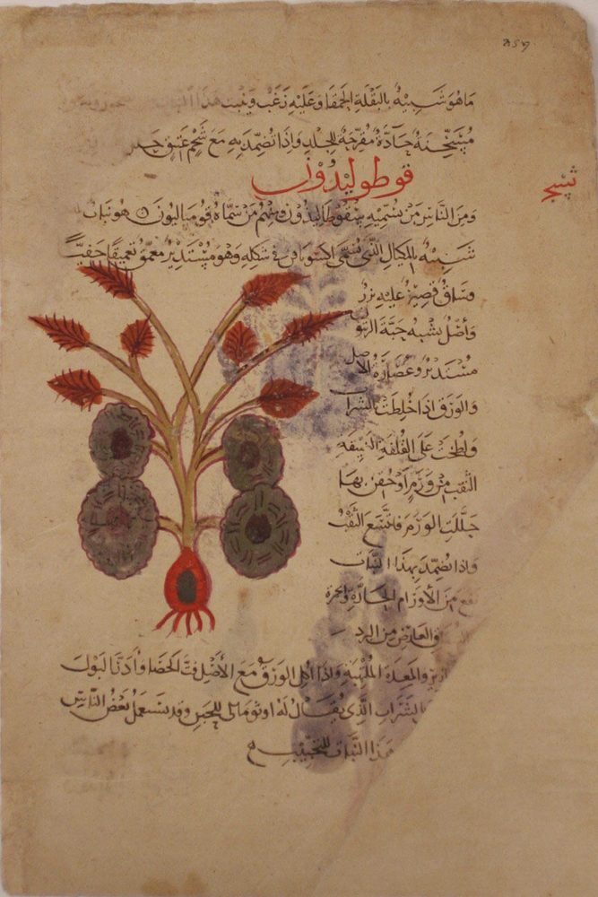
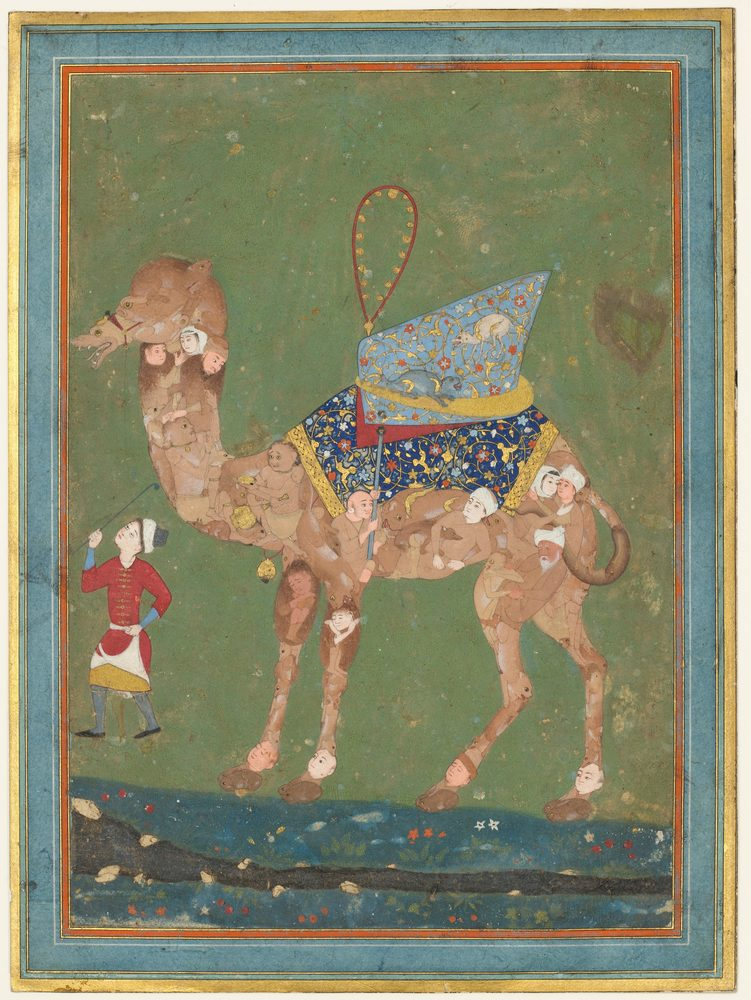
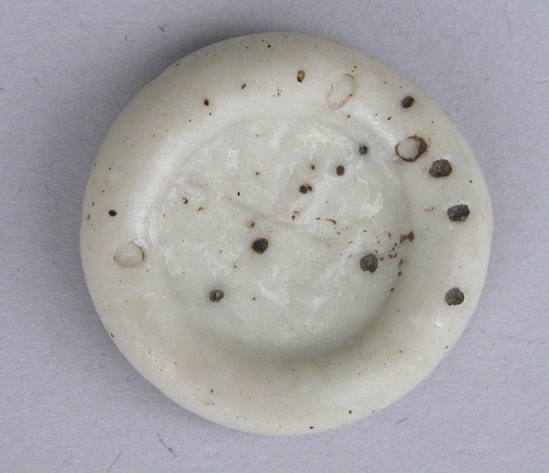
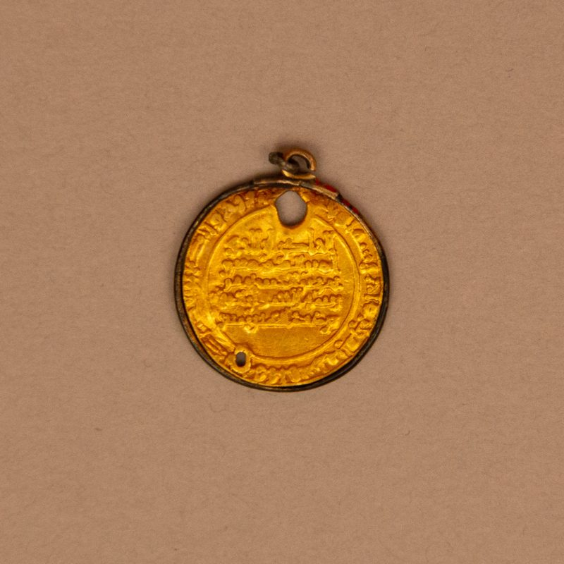
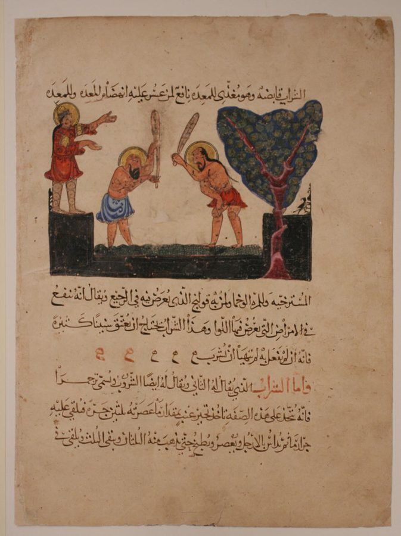
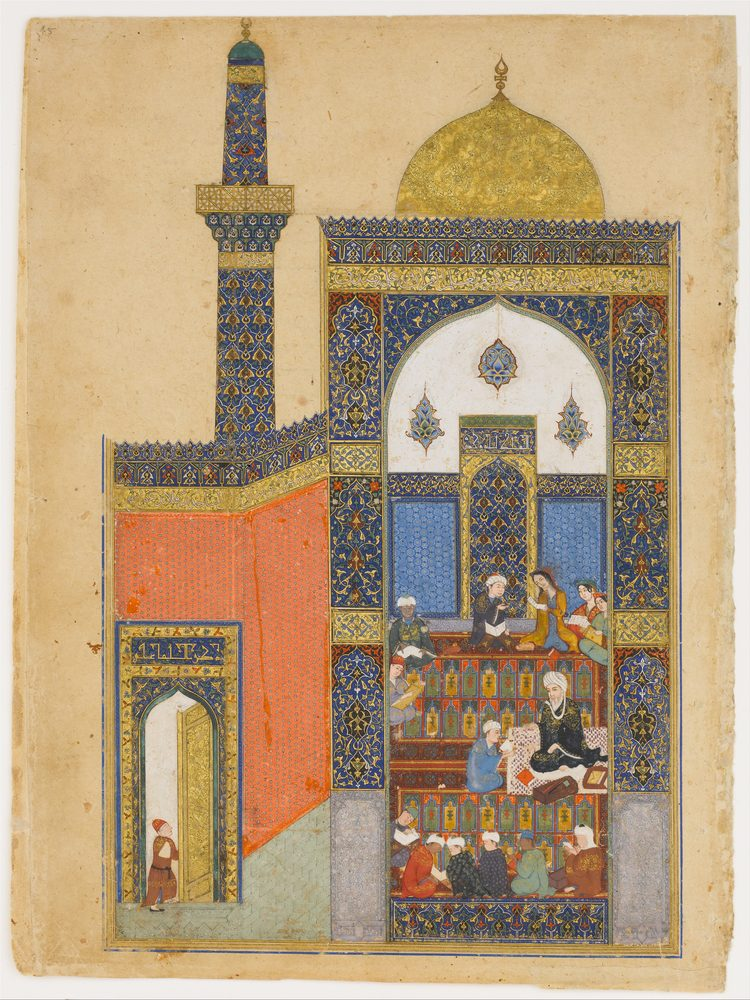

The short answer
A good Quran research topic starts from one ayah, asks one question, and names the field that can answer it. Below are 20 to start from, grouped by the four tasks of 62:2.
Each topic gives you the verse, a question, and the field to take it to. None of them is finished. They’re starting points for your own reading.
The Quran keeps sending its readers to the world: to the sky, to living things, to societies and to their own selves. Every one of those is a field of study, and each generation brings new tools to it. That’s why the list could be far longer.


What makes a good research topic
Before you pick, check your topic against these five points.
- It starts from an ayah, not from a headline you want to match.
- It asks one question, not “what does this verse mean?”
- A field can test it, whether that’s biology, economics or psychology.
- It could be proven wrong. If no result could count against it, it isn’t research yet.
- You can start it this month with what you have: a library, a lab, a survey or public data.
The method behind these points is in How to Study the Quran.
Topics on the signs: the cosmos and the self
These come from yatlū āyātihi, the signs. The Quran points to living things, water, the wind and the variety of people, and calls them signs “for a people who give thought.”
| Ayah | Research question | Field |
|---|---|---|
| 16:68-69, the bee’s drink “in which there is healing for people” | What properties of honey make it useful in medicine, and for which conditions does the evidence hold? | Microbiology, medicine |
| 88:17, “Then do they not look at the camels, how they are created?” | How does a camel’s body handle heat and water loss, and what could that teach about surviving drought? | Physiology |
| 21:30, “We made from water every living thing” | Why does every known form of life need water, and what does that mean for the search for life elsewhere? | Biochemistry, astrobiology |
| 36:36, “all pairs, from what the earth grows… and from that which they do not know” | Where do pairs appear in plant life beyond male and female? | Botany |
| 45:5, “His directing of the winds” | How do wind patterns shift through the year, and how do they carry rain to dry land? | Atmospheric science |
| 30:22, “the diversity of your languages and your colors” | How did human languages divide and change, and what do they still share? | Linguistics |
Topics on the self and society
These come from yuzakkīhim, purifying. Purification here reaches past the individual to how a whole community thinks, trusts and treats its people.
| Ayah | Research question | Field |
|---|---|---|
| 13:11, “Allah will not change the condition of a people until they change what is in themselves” | What has to change inside a community before its conditions improve, and which change comes first? | Social psychology, development studies |
| 49:6, “if there comes to you a disobedient one with information, investigate” | How fast does unverified news spread, and which habits stop it? | Media studies, psychology |
| 49:12, “avoid much [negative] assumption… do not spy or backbite” | What do gossip and suspicion do to trust inside a group or workplace? | Organizational psychology |
| 4:35, “send an arbitrator from his people and an arbitrator from her people” | Do mediators chosen from both families settle more disputes than outside mediators? | Family studies, conflict resolution |
| 17:24, “lower to them the wing of humility out of mercy” | How does respectful care at home affect the health and wellbeing of ageing parents? | Gerontology, public health |
| 94:5, “with hardship [will be] ease” | What helps people recover after hardship, and what predicts who recovers well? | Psychology |
Topics on law, money and institutions
These come from yu‘allimuhum al-kitāb, the Book: the rules a society runs on. Each one is a question for economics, law or public administration, not a request for a fatwa.
| Ayah | Research question | Field |
|---|---|---|
| 59:7, “so that it will not be a perpetual distribution among the rich from among you” | Which policies stop wealth from concentrating in a few hands, and which have actually worked? | Economics |
| 2:282, “when you contract a debt for a specified term, write it down” | Do written contracts reduce disputes and defaults in small loans between people who know each other? | Law, behavioural economics |
| 4:58, “render trusts to whom they are due and… judge with justice” | How do appointment on merit and fair courts affect people’s trust in their institutions? | Public administration |
| 42:38, “whose affair is [determined by] consultation among themselves” | When does consultation lead a group to better decisions, and when does it only slow them down? | Decision science |
| 83:1-3, “Woe to those who give less [than due]” | How common is short weight and short measure in local markets today, and what stops it? | Market studies, consumer protection |


Topics on timing and priority
These come from al-ḥikmah, wisdom: knowing when a rule is needed and what has to come first.
| Ayah | Research question | Field |
|---|---|---|
| 2:219, then 4:43, then 5:90, the verses on wine | The Quran’s verses on wine came in stages. What do studies of behaviour change say about changing a habit step by step instead of all at once? | Public health, behaviour change |
| 12:47-49, “what you harvest leave in its spikes” | Does grain stored in the ear keep better than threshed grain, and how should a country plan food reserves for a drought? | Agricultural science, food security |
| 2:185, “Allah intends for you ease and does not intend for you hardship” | The fast comes with exemptions for the ill and travellers. How do exemptions keep a demanding rule workable, and could public policy use the same design? | Policy design |

Topics to avoid
Some topics look like research but lead nowhere. Skip these:
- Matching a headline. Starting from a new discovery and hunting for the verse that “said it first” is the habit this whole approach exists to change.
- Counting words and numbers. A pattern of numbers needs a method, not a coincidence.
- Sect disputes. A research question shouldn’t depend on which group you belong to.
- Ritual rulings. How to pray or fast is a question for a scholar, not a research project.
- Claims nothing could disprove. If no result could count against your idea, it isn’t ready.
From topic to paper
Once you’ve picked a topic, follow the eight steps: check the words, ask what follows, read the classical scholars, then take your question to the field.
Write it up briefly, say what would prove you wrong, and get two reviews: a scholar of classical Arabic and a researcher in the field. Then publish it with the ayah that started it.
You don’t have to finish the whole question. A careful first note on one of these topics is worth publishing, because someone else can build on it.
Common questions
How do I choose an Islamic research topic?
Start from an ayah that makes you curious, then ask what it sends you to find out. Pick the one where a field you can work in can test the answer.

Can a school student research these?
Yes. Several of these topics need only public data, a survey or a library. Start small, and get your work reviewed before you publish it.
What makes a topic too broad?
If you can’t name the one result that would answer it, it’s too broad. “Honey in the Quran” is a theme. “Which properties of honey help heal wounds?” is a question.
Can I write my research in Urdu?
Yes. Write in the language you think best in, as long as your reviewers can read it.
Sources
Verse translations are Saheeh International. Every research question here is a starting point, not a finding.